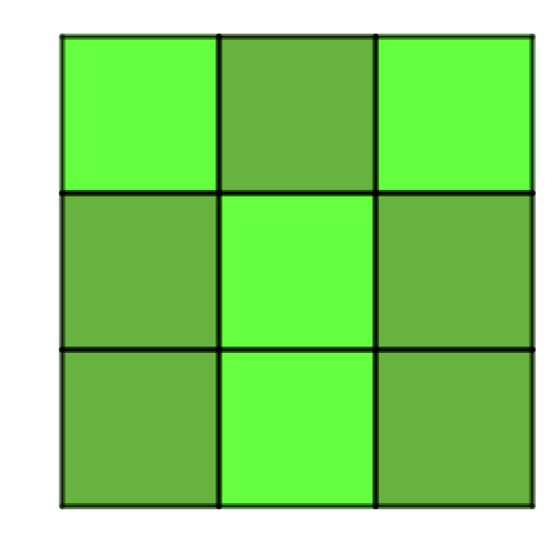
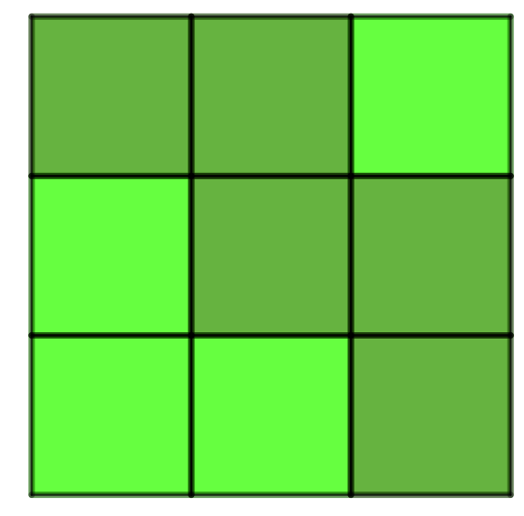
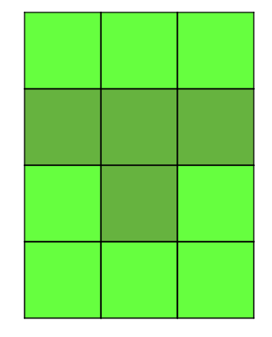

Projet 5.5.1. Le jeu “Lights out”.
“Lights Out” est un jeu électronique mis en marché en 1995. Il consiste en une grille de taille \(5\times 5\) dans laquelle on retrouve de petites lumières qui peuvent être allumées ou éteintes. Lorsqu’on touche un élément de la grille, celui-ci, ainsi que ses quatre voisins, changent d’état, passant d’allumé à éteint ou d’éteint à allumé. Le but du jeu est, étant donnée une configuration initiale, d’éteindre toutes les lumières. Voici une image tirée de Wikipedia 1 qui montre le fonctionnement du jeu.
![Cinq grille de taille cinq de taille cinq par cinq sont illustrées. Les grilles sont de couleur vert foncé avec certains carrés plus brillant, simulant une lumière ouverte. Dans celle à l’extrémité gauche, il n’y a que le carré au coin supérieur gauche qui est en position ouvert. Une flèche amenant à la seconde grille dans laquelle on voit une main appuyé sur le carré inférieur droit. Dans la troisième grille, les trois carrés formant un L inversé dans le coin inférieur droit sont maintenant allumés. La quatrième grille voit une main appuyer sur le carré dans la quatrième ligne et quatrième colonne. Celui-ci passe de éteint à allumé dans la cinquième grille tout comme celui à sa gauche et au-dessus. Les carrés à sa droite et en dessous eux passent d’allumés à éteints.](external/images/LightsOutIllustration.svg)
On considère, dans un premier temps, une version simplifiée du jeu où la grille est de taille \(3\times 3\text{.}\) On peut représenter une grille de jeu par une matrice où les entrées sont \(1\) si la lumière est allumée et \(0\) si la lumière est éteinte. La figure 5.5.2 illustre un exemple associé à la matrice
\begin{equation}
L_1=\begin{pmatrix}
1&0&1\\
0&1&0\\
0&1&0
\end{pmatrix}\text{.}\tag{5.5.1}
\end{equation}

Pour le cas \(3\times 3\text{,}\) il s’avère qu’il existe une solution peu importe la configuration initiale. L’image interactive ci-dessous permet de jouer avec une configuration aléatoire et montre aussi la solution optimale dans chaque cas.
Instructions.
Cliquer sur Nouvelle Version pour obtenir une grille à résoudre. Cliquer ensuite sur les différents carrés afin de changer l’état de ceux-ci et de leurs voisins. Pour afficher la solution, cliquer sur le bouton du même nom. On peut ensuite revenir à une grille résolue en cliquant sur Réinitialiser.
(a)
L’espace dans lequel on travaillera pour résoudre ce problème est l’espace des matrices dont les entrées ne sont que des \(0\) ou des \(1\text{.}\) On définit sur les nombres \(\{0,1\}\) les opérations suivantes:
\begin{align*}
0\oplus 0&=0\\
1\oplus 0&=1\\
0\oplus 1&=1\\
1\oplus 1&=0
\end{align*}
et pour \(r\neq 1\text{,}\) on définit \(r\otimes 1=0\) et \(r\otimes 0=0\) alors que pour \(r=1\text{,}\) on définit \(r\otimes 1=1\) et toujours \(r\otimes 0=0\text{.}\)
Montrer que l’ensemble des nombres \(\{0,1\}\) muni de ces opérations est un espace vectoriel.
Ceci entraine que l’espace des matrices muni de l’addition entrée par entrée avec ces opérations est aussi un espace vectoriel.
(b)
Sur Sage, il est possible de travailler avec l’addition définie plus haut. Cela correspond à travailler en modulo \(2\text{.}\) Pour cela, on ajoute un argument
GF(2) dans la définition des matrices et des vecteurs, indiquant à Sage qu’on ne travaille qu’avec les nombres \(0\) et \(1\text{.}\) Sage connait déjà les règles arithmétiques de cet espace.(i)
On peut associer à chaque case une matrice donnant son effet lorsqu’on clique sur la case. L’effet d’un clic revient donc à additionner à une matrice représentant une grille de “Lights Out” la matrice du clic, selon les règles de l’addition définies plus haut. Par exemple, un clic sur la case en position \((2,2)\) correspond à la matrice
\begin{equation*}
C_{2\,1}=\begin{pmatrix}
1&0&0\\
1&1&0\\
1&0&0
\end{pmatrix}\text{.}
\end{equation*}
Son effet sur la grille de la figure 5.5.2 peut donc être obtenu en ajoutant à la matrice \(L_1\) la matrice \(C_{2\,2}\) (suivant les règles d’additions définies plus haut):
\begin{equation*}
\begin{pmatrix}
1&0&1\\
0&1&0\\
0&1&0
\end{pmatrix}+\begin{pmatrix}
1&0&0\\
1&1&0\\
1&0&0
\end{pmatrix}=\begin{pmatrix}
0&0&1\\
1&0&0\\
1&1&0
\end{pmatrix}\text{.}
\end{equation*}
Le résultat est illustré ci-dessous.

Sur Sage:
Définir les neuf matrices de clic.
(ii)
Vérifier que
\begin{equation}
L_1+C_{1\,1}+C_{1\,3}+C_{3\,1}+C_{3\,2}+C_{3\,3}=O\tag{5.5.2}
\end{equation}
et est donc une solution à la grille de la figure 5.5.4.
(iii)
Justifier le fait que, pour une solution, l’ordre dans lequel on clique sur les carrés n’est pas important.
(iv)
Montrer que chaque matrice est son propre inverse dans cet espace.
(c)
On s’intéresse maintenant à obtenir une solution pour une configuration de départ spécifique \(L\text{.}\) On cherche une suite de matrice \(C_k\in\{C_{1\,1},C_{2\,2},\ldots , C_{3\,3}\} \) telles que
\begin{equation*}
L+C_1+C_2+\cdots C_n=O\text{.}
\end{equation*}
Puisque chaque matrice est son propre inverse, on peut réécrire l’équation sous la forme
\begin{equation*}
C_1+C_2+\cdots C_n=L\text{.}
\end{equation*}
(i)
Expliquer pourquoi, dans une solution optimale (nombre minimal de clic), chaque matrice apparait au plus une fois.
(ii)
En vertu de l’exercice précédent, on peut alors dire que pour avoir une solution, il faut que la matrice \(L\) soit dans le \(\vspan\) des matrices \(\{C_{1\,1},C_{2\,2},\ldots , C_{3\,3}\}\text{,}\) c’est-à-dire
\begin{equation}
x_1C_{1\,1}+x_2C_{2\,2}+\ldots + x_9C_{3\,3}=L\text{,}\tag{5.5.3}
\end{equation}
avec les \(x_k\in\{0,1\}\text{.}\) Comme l’espace des matrices de taille \(3\times 3\) est de dimension \(9\) et qu’une base de cet espace est donnée par les neuf matrices qui ne contiennent qu’une entrée non nulle égale à \(1\) (voir l’exemple 5.4.14), on peut écrire l’équation (5.5.3) sous la forme matricielle
\begin{equation*}
\begin{pmatrix}
1 & 1 & 0 & 1 & 0 & 0 & 0 & 0 & 0 \\
1 & 1 & 1 & 0 & 1 & 0 & 0 & 0 & 0 \\
0 & 1 & 1 & 0 & 0 & 1 & 0 & 0 & 0 \\
1 & 0 & 0 & 1 & 1 & 0 & 1 & 0 & 0 \\
0 & 1 & 0 & 1 & 1 & 1 & 0 & 1 & 0 \\
0 & 0 & 1 & 0 & 1 & 1 & 0 & 0 & 1 \\
0 & 0 & 0 & 1 & 0 & 0 & 1 & 1 & 0 \\
0 & 0 & 0 & 0 & 1 & 0 & 1 & 1 & 1 \\
0 & 0 & 0 & 0 & 0 & 1 & 0 & 1 & 1
\end{pmatrix}\begin{pmatrix} x_1\\ x_2\\ x_3\\ x_4\\ x_5\\ x_6 \\ x_7\\ x_8\\ x_9\\ \end{pmatrix}=L_{\text{vec}}
\end{equation*}
où \(L_{\text{vec}}\) correspond à l’écriture vectorielle de la matrice \(L\) dans la base des matrices ne contenant qu’un seul \(1\text{.}\) La représentation vectorielle de la matrice \(L_1\) l’équation (5.5.1) est donnée par \(L_{1\,\text{vec}}=(1,0,1,0,1,0,0,1,0)\text{.}\) On considère donc que la base ordonnée de cet espace est
\begin{equation*}
\left\langle \begin{pmatrix}1&0&0\\ 0& 0& 0 \\ 0& 0& 0\end{pmatrix},\begin{pmatrix}0&1&0\\ 0& 0& 0 \\ 0& 0& 0\end{pmatrix},\begin{pmatrix}0&0&1\\ 0& 0& 0 \\ 0& 0& 0\end{pmatrix}\begin{pmatrix}0&0&0\\ 1& 0& 0 \\ 0& 0& 0\end{pmatrix},\begin{pmatrix}0&0&0\\ 0& 1& 0 \\ 0& 0& 0\end{pmatrix},\begin{pmatrix}0&0&0\\ 0& 0& 1 \\ 0& 0& 0\end{pmatrix},\begin{pmatrix}0&0&0\\ 0& 0& 0 \\ 1& 0& 0\end{pmatrix},\begin{pmatrix}0&0&0\\ 0& 0& 0 \\ 0& 1& 0\end{pmatrix},\begin{pmatrix}0&0&0\\ 0& 0& 0 \\ 0& 0& 1\end{pmatrix}\right \rangle_{\mathcal{B}}\text{.}
\end{equation*}
La première colonne de cette matrice vient donc du fait que
\begin{align*}
x_1C_{1\, 1}&=x_1\left(\begin{pmatrix}1&0&0\\ 0& 0& 0 \\ 0& 0& 0\end{pmatrix}+\begin{pmatrix}0&0&1\\ 0& 0& 0 \\ 0& 0& 0\end{pmatrix}+\begin{pmatrix}0&0&0\\ 1& 0& 0 \\ 0& 0& 0\end{pmatrix}\right)\\
&=(1,1,0,1,0,0,0,0,0)_{\mathcal{B}}\text{.}
\end{align*}
Montrer que la solution pour la matrice \(L_1\) est bel et bien celle qui est donnée à l’équation (5.5.2) en résolvant ce système d’équations.
(iii)
Les questions suivantes s’intéressent au nombre de solutions et à l’existence de solutions pour la grille \(3\times 3\text{.}\)
(A)
Montrer que la solution est unique.
(B)
Est-ce que toute configuration initiale possède une solution?
(d)
On explore maintenant quelques variantes.
(i)
La première variante considère tout simplement la grille carrée de taille \(5\times 5\text{.}\)
(A)
Montrer que la configuration de départ où seulement la case au coin supérieur gauche est allumée ne possède pas de solutions.
(B)
Montrer que la grille où toutes les cases sont initialement allumées possède plusieurs solutions et donner l’une de celles-ci.
(ii)
Rien n’empêche la grille d’être carrée, on pourrait tout aussi bien avoir une grille rectangulaire.
(A)
Il existe \(64\) configurations initiales pour une grille de taille \(3\times 2\text{.}\) Combien possèdent une solution?
(B)
Déterminer si possible une solution pour la grille suivante:

(e)
Explorer une autre variante, existante ou inventée. Répondre aux questions suivantes:
- Est-ce qu’il y a toujours une solution peu importe la configuration initiale?
- S’il y en a une, donner une solution pour une grille complètement allumée et sinon, montrer qu’il n’y en a pas.
Voici quelques inspirations:
- Un jeu où il y a trois états pour une case, par exemple rouge, vert et éteint. Un clic change la case et ses voisins selon l’ordre rouge à vert, vert à éteint et éteint à rouge. Considérer une grille \(5\times 5\) et partir de l’état où tout est rouge.
- Un jeu où les bords sont reliés, chaque clic affecte cinq cellules. Donc la cellule dans le coin supérieur gauche change aussi l’état de la cellule dans le coin supérieur droit et dans le coin inférieur gauche. Considérer une grille \(5\times 5\text{.}\)
- Un jeu où chaque clic affecte la ligne entière et la colonne entière. Considérer une grille \(5\times 5\text{.}\)
Dans le cas d’une variante inventée, bien clarifier les règles du jeu.